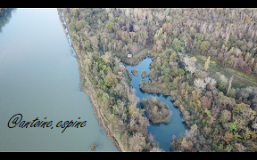
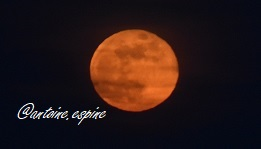

Voici quelques photos que j'ai prises en tant qu'amateur:
Qu'elles soient de paysages, de bâtiments, de portraits, d'astres ou encore animalières...
Qu'elles soient prises des airs ou du sol,
les photographies me passionnent et c'est pour cela que je m'exerce pour améliorer mes prises de vue afin d'être fier de pouvoir les partager.

